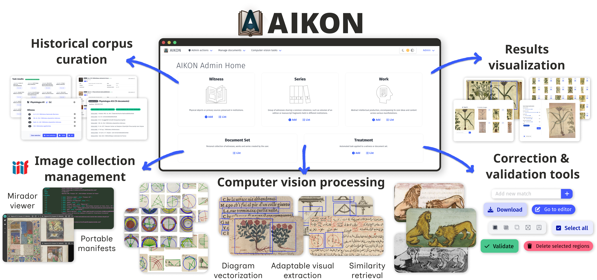
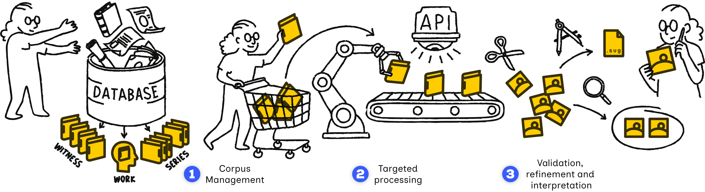
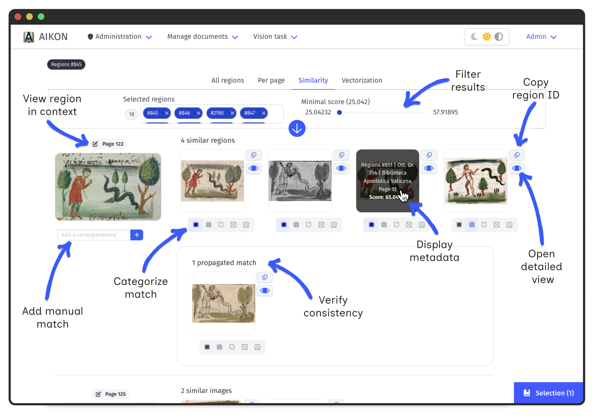

Platforms
AIKON Platform
Main platform for computer vision analysis of historical documents
AIKON Demo
Demo version showcasing platform capabilities
AIKON is a modular computer vision platform that enables historians to build, process, and analyze visual corpora at scale. The platform guides users through a complete workflow from corpus construction to algorithmic processing and result validation, without requiring technical expertise. Built on IIIF standards and featuring a flexible data model, AIKON supports collaborative research while maintaining full user control over automatic processing. Its modular architecture allows easy integration of new computer vision algorithms and visualization tools, making it adaptable to diverse research needs across historical document analysis.
Main platform for computer vision analysis of historical documents
Demo version showcasing platform capabilities

At its core, Aikon allows researchers to describe their sources, import scans, request automatic processing, and manually refine results. Built on proven technologies and interoperable formats, including established standards such as IIIF, the platform's architecture supports a wide range of visual materials. Aikon's data model, centered around the concepts of Series, Witness, and Content, provides a flexible framework capable of describing diverse source materials while facilitating alignment across varied corpora.
The platform's modular structure enables easy integration of additional functionalities, with current applications including illustration extraction, similarity search, and vectorization. Aikon is not tied to any predetermined analysis methods; all stages can be performed manually or automated, with specialized models customizable to specific datasets. This approach ensures adaptability to various research needs while maintaining reproducibility. By fostering interdisciplinary collaboration and sustainability across digital humanities projects, Aikon aims to assist researchers to explore corpora at an unprecedented scale, helping to bridge the gap between advanced computational methods and the nuanced requirements of humanities research.

EdIter et analyser les Diagrammes astronomiques historiques avec l'intelligence Artificielle
ANR-22-CE38-0014To get an account on aikon.enpc.fr to try all platform features, don't hesitate to contact us.

Explore the Aikon project and contribute to its development on GitHub .
@article{albouy2025aikon,
title={{AIKON : A Modular Computer Vision Platform for Historical Corpora}},
author={
Albouy, Ségolène and
Norindr, Somkeo and
Kervegan, Paul and
Aouinti, Fouad and
Delanaux, Rémy and
Champenois, Robin and
Lazaris, Stavros and
Guilbaud, Alexandre and
Husson, Matthieu and
Aubry, Mathieu
},
url={https://hal.science/hal-05248250},
year={2025},
month={Sep},
number={hal-05248250},
journal={HAL Pre-Print},
keyword={Digital Humanities, Computer Vision, Historical Documents, Visual Analysis},
}